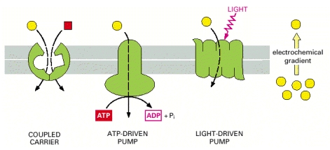

Understand what a rate limiting enzyme is, what a committed enzyme step is and what a reversible reaction is.
Explain the differences in speed and persistence of allosteric, post-translational and transcriptional regulation of metabolism.
Describe the role of cellular transport in macromolecular regulation. Understand the differences between active and passive transport.
Cells need to control the rates at which nutrients are taken up, stored, or used and there are several ways by which this occurs. Here we will review the biochemistry of both nutrient transport and enzyme function. Understanding these concepts will be very important to understanding how the metabolic pathways we will discuss later in class are controlled.
First we will describe the ways in which cells control nutrient permability. Most nutrients we will discuss are unable to pass through the plasma membrane of the cell. Allowing or denying access to a nutritent is one way by which cells can control nutrient metabolism. Without these transport mechanisms we would be unable to absorb digested food, or transfer nutrients from cell to cell. While we normally think of transporters as getting nutrients into or out of a cell, they are also important within cells, for example getting pyruvate into the mitochondria, or storing calcium in the endoplasmic reticulum.
Membrane transporters are generally fairly specific for the molecule they transport. For example GLUT4 transports glucose, but GLUT5 transports fructose. Transporters can broadly be separated into two major types, passive transporters and active transporters.
allow for nutrients to pass down a concentration gradient into the cell. For example, the liver expresses a glucose transporter named GLUT2. Glucose can either enter the liver (if there is more glucose in the blood than the liver) or exit the liver (if the reverse is true). Passive transporters will only allow a nutrient to enter a cell if there is less of the nutrient in a cell than in the blood. This is quite efficient for disposing of excess nutrients, such as after a meal, but is not effective in storing things away against a concentration gradient. It may seem like passive transporters are not regulated, but as we will see in the case of GLUT4, the amount of transporters at the cell surface can be controlled by cell signaling. The rate of a passive transport is defined by three things, the gradient of the tranported molecule, the number of transporters and the efficiency of the transporter.
can force nutrients into a cell against the concentration gradient. These transporters function like pumps and have to use energy of one sort or another to “power” the molecule into the cell. You may think that this is a bad idea, but there are lots of examples where this matters physiologically. One example is retaining salt. If your kidneys werent actively retrieving sodim out of urine and back into the blood, then you would rapidly lose osmotic pressure in your blood. The key is to think about the concentration inside or outside, if you are pushing against the transport gradient, you need active transport.
Active transport requires energy of some type. This energy can come from several sources such as ATP, other concentration gradients, or even light. Some examples are described in Figure [fig:active-transport-mechanisms] taken from Molecular Biology of the Cell(Alberts et al. 2002). The key to controlling the rate of these transporters is not only the concentration gradient of the transported molecule, but also the levels (or gradient) of the powering force. In the cases where molecules are co-transported they can either be pulled in simultaneously (this is known as a symporter) with the molecule of interest as shown on the left of Figure [fig:active-transport-mechanisms], or can be exchanged where one molecule exits, powering the entry of the molecule of interest (this is known as an antiporter). A classic example of an antiporter is the sodium:glucose exchanger SGLT1, which extrudes sodium down its concentration gradient (into the gut lumen) to force uptake of glucose from the gut into cells. This allows for efficient carbohydrate uptake in a meal

When we eat, some of this chemical energy is converted into ATP to allow for function. This is known as catabolism. When we are storing nutrients, we use ATP to generate higher energy molecules such as fats or glycogen. This is known as anabolism. Every molecule in our body has a set amount of energy and a chemical reaction can be considered endothermic (requiring energy) or exothermic (releasing energy), depending on whether the reactants or products have higher energy. The levels of these metabolites at equillibrium can be calculated with the following equation where Keq is the Eqiullibrium constant:
$$K_{eq}=\tfrac{[B]}{[A]}$$
The equillibrium constant can be calculated from the free energy of the reactants and products.
ΔGo = Go′ − RTlnKeq
ΔGo′ = Go′(reactants)−Go′(products)
Some reactions have products with very similar energy levels and the balance between the reactants and the products is based only on their concentrations. This is known as an equillibrium reaction which would have a Keq of near to 1. If a reaction requires a lot of energy to occur, this is often an irreversible or committed step. This means that once this reaction happens, there is no going back. If you think about the metabolic pathway in Figure [fig:committed-step], this would mean that once you proceed through step 2 to make C you cannot go back to B. Given the free energy and concentration of the reactants and products in a reaction you can calculate the ΔG and equillibrium constant for a reaction and estimate whether it is reversible.
rather than the levels at equillibrium, in the body most reactions are normally very slow without enzymes. Enzymes function to increase the rate of a chemical reaction. They do this by reducing the activation energy required for a reaction to occur, but does not change the equillibrium constant. This is described in Figure [fig:enzymatic-rates], note that ΔG is not changed, but the dashed line has a higher activation energy, and therefore slower reaction rate than the solid line.
at which metabolites are converted to its final product. The overall rate of a metabolic pathway is controlled by the rate-limiting step. In a linear pathway, the speed of this step’s enzymatic reaction controls the overall rate. Quite often this enzyme is an important site of regulation, as adjusting the speed of this reaction can speed up or slow down and entire pathway. Reaction rates increase in rate as the amount of substrates increase until the enzymes are saturated (see the solid line in Figure [fig:enzyme-kinetics]). This is known as Michaelis-Menten kinetics. The reaction rate constant (k) and rate can be calculated from the activation energy with these equations:
$$k = A e^{-\frac{E_{a}}{RT}}$$
$$rate = k\tfrac{[Reactant][Enzyme]}{[Reactant] + K_{m}}$$
If products build up the reaction becomes more complex and now looks like this where Kp is the binding constant for the product:
$$rate = k\tfrac{[Reactant][Enzyme]}{[Reactant] +K_{m}\left \{ 1 + \frac{[Product]}{Kp} \right \}}$$
. Allosteric enzymes are generally multi-subunit enzymes that change their Km as more products bind. An example of this is the dashed line in Figure [fig:enzyme-kinetics]. This has several advantages in terms of regulation. One advantage is that the reaction rate can be effectively zero or at maximum in a much narrower range, bracketing the actual range of substrates present physiologically. Another advantage is that allosteric activators or inhibitors can shift the curve to the left or right, to effectively increase or decrease the reaction rate.
On the basis of these equations, reaction rates and therefore the efficiency of a particular pathway can be increased by several things. Try to convince yourselves how this happens based on the equations listed above. Can you think of any other things that would affect pathway flux?
, another aspect of pathway control is how the fate of a particular nutrient is decided. This is illustrated in Figure [fig:nutrient-pathways]. In the example on top the nutrient would be equally distributed between three products, but in the bottom example, by adjusting the rates of the specific pathways, a nutrient can be directed to a particular product. At several points during this class, we will describe how the “fates” of particular metabolites are controlled by the relative rates of metabolic pathways.
There are several ways in which enzymes are regulated, both based on intracellular and extracellular signals. An example might be that a lack of intracellular ATP causes an increase in ATP producing pathways such as glycolysis. On the other hand, low circulating blood glucose levels may work to stop a glucose consuming process such as glycolysis. We will discuss this in detail throughout the lecture, but some of the hormones we will discuss in this course that are particularly important are listed in Table [tab:hormones]:
| Hormone | Main Function |
|---|---|
| Insulin | Reduces blood glucose and lipid levels |
| Adrenaline | Increases blood flow, nutrients to muscle |
| Glucagon | Increases blood glucose levels acutely |
| Cortisol | Increases blood glucose levels chronically |
| GH/IGF1 | Promotes protein synthesis and bone growth |
| Testosterone | Promotes protein synthesis |
| Leptin | Suppresses appetite |
| CCK, Gastrin, Secretin | Regulation of digestion |
Hopefully these hormones, how they work and how they are regulated is material you are familiar with from previous classes. If not, or you want a refresher, check out the Endocrine Control of Macronutrient Metabolism handout also available on Canvas.
Alberts, Bruce, Alexander Johnson, Julian Lewis, Martin Raff, Keith Roberts, and Peter Walter. 2002. Molecular Biology of the Cell. 4th ed.
Berg, J M, John L Tymockzko, and L Stryer. 2013. Biochemistry. Vol. New York.
Ferrier, Denise. 2017. Lippincott Illustrated Reviews: Biochemistry. 7th ed. 1496344499: LWW.